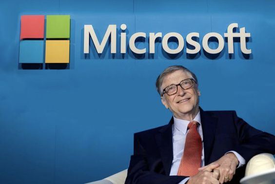
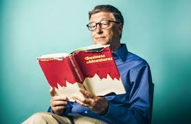
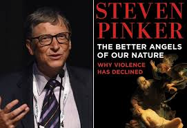

BILL GATES
Bill Gates, born William Henry Gates III on October 28, 1955, in Seattle, Washington, is an American businessman, investor, philanthropist, and writer. He is best known for co-founding Microsoft with his childhood friend Paul Allen. Gates played a pivotal role in the microcomputer revolution of the 1970s and 1980s, leading Microsoft as its chairman and CEO until 2000. He is a prominent figure in the technology industry and has been actively involved in philanthropic efforts through the Bill & Melinda Gates Foundation. Gates has been consistently ranked among the world's wealthiest individuals and is known for his significant contributions to various charitable causes and scientific research programs
Education
Bill Gates was born on October 28, 1955, in Seattle, Washington, and attended Harvard University but dropped out to co-found Microsoft with Paul Allen in 1975. He enrolled at Harvard in 1973 as a pre-law student but focused on mathematics and graduate-level computer science courses. Gates developed an algorithm at Harvard that addressed an unsolved problem and gained academic recognition. Despite taking a leave of absence to start Microsoft, he never returned to complete his degree. Harvard later awarded Gates an honorary doctorate in 2007, and he has received honorary degrees from various other institutions. Gates' legacy at Harvard includes his academic achievements and his significant contributions to the tech industry and philanthropy
"Carrier"

Bill Gates is a prominent American computer programmer, entrepreneur, and philanthropist. He is best known for co-founding Microsoft Corporation, the world's largest personal-computer software company. Gates wrote his first software program at the age of 13 and later dropped out of Harvard University to establish Microsoft with his friend Paul G. Allen. Over the years, Gates led Microsoft to become a global leader in business and personal software and services. In 2008, he transitioned to focus full-time on philanthropic work through the Bill & Melinda Gates Foundation, where he works on various initiatives to improve equity worldwide. Gates is also involved in climate change and clean energy innovation through Gates Ventures and Breakthrough Energy. Additionally, he co-founded the Giving Pledge, encouraging wealthy individuals to commit a significant portion of their wealth to charitable causes. Gates is recognized for his significant contributions to technology, business, and philanthropy, making him a key figure in the global landscape of innovation and social impact
Awards
he has received various other prestigious awards and honors for his philanthropic work and contributions to society. One of the notable awards he received is the KISS Humanitarian Award in 2023, which recognized his exceptional philanthropic efforts in enhancing global health, education, and addressing climate change through innovative technology solutions aimed at reducing inequality
"Quotes of Bill gates"
- "Your most unhappy customers are your greatest source of learning."
- "It's fine to celebrate success, but it is more important to heed the lessons of failure."
- "The Internet is becoming the town square for the global village of tomorrow."
- "Your work is going to fill a large part of your life, and the only way to be truly satisfied is to do what you believe is great work. And the only way to do great work is to love what you do."
"BOOKS"
1-"Business Adventures": An Intimate History" by Siddhartha Mukherjee - Gates has recommended this book, which offers a comprehensive exploration of the history and impact of genetics on society and individuals.

2-"The Genee": Why Violence Has Declined" by Steven Pinker - Gates has praised this book for its exploration of the decline of violence throughout human history and the factors contributing to it.

3-"Sapiense": A Brief History of Humankind" by Yuval Noah Harari - Gates has spoken highly of this book, which provides an overview of the history of Homo sapiens, from the emergence of our species to the present day.